Chapter 5 확률분포
5.1 이산형 확률분포
5.1.1 이산형 균일분포
이산형 균일분포 확률변수 \(X\)가 가질 수 있는 값 \(a, a+1, \ldots, b-1, b(a<b)\)의 각각의 확률이 동일하다면 이산형 균일분포는 다음과 같다. \[p(x; a,b)=\frac{1}{b-a+1}, \hskip5pt x=a, \ldots, b\]
이산형 균일분포(discrete uniform distribution)는 이산형 확률분포 중에서 가장 간단한 형태
이산형 균일분포는 확률변수가 취할 수 있는 각 값들이 모두 동일한 확률을 가짐
균일분포가 모수(parameter) \(a\)와 \(b\)에 의존함을 나타내기 위하여 \(p(x)\) 대신에 \(p(x; a,b)\)라는 기호를 사용
주사위를 던지는 실험에서 발생하는 눈금을 확률변수 \(X\)라 할 때 \(X\)는 1, 2, 3, 4, 5, 6의 값을 가질 수 있고, 각 눈금이 나올 확률은 \(1/6\)로 동일하다. 따라서 \(X\)는 이산형 균일분포를 따른다. 이때 \(X\)의 확률분포는 \(p(x)=1/6\)이다.
(풀이)
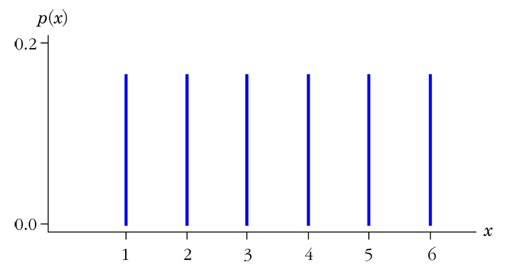
이산형 균일분포의 평균, 분산, 적률생성함수는 다음과 같다. \[E(X)=\frac{a+b}{2}, \hskip5pt Var(X)=\frac{(b-a)(b-a+2)}{12}, \hskip5pt m(t)=\sum_{x=a}^be^{tx}\frac{1}{b-a+1}\]
- (증명) \[E(X)=\sum_{x=a}^b xp(x)=\frac{1}{b-a+1}\sum_{x=a}^b x=\frac{1}{b-a+1}\frac{(b-a+1)(a+b)}{2}=\frac{a+b}{2}\] \[Var(X)=E(X^2)-(E(X))^2=\sum_{x=a}^b \frac{x^2}{b-a+1}-(\frac{a+b}{2})^2=\frac{(b-1)(b-a+2)}{12}\]
승용차에 주유를 가득할 때 나타나는 금액의 천원 이하의 단위금액은 \(0\)원에서 \(999\)원까지 나타날 수 있다. 이 때 나타나는 천원 이하의 단위금액의 평균과 표준편차를 구하라.
- (풀이) 천원 이하의 단위금액은 \(a=0\), \(b=999\)인 이산형 균일분포를 따르므로 정의에 의해서 평균과 분산은 다음과 같다. \[E(X)=\frac{a+b}{2}=\frac{0+999}{2}=499.5\] \[Var(X)=\frac{(b-a)(b-a+2)}{12}=\frac{999\times 1001}{12}=83333.25\]
5.1.2 베르누이분포와 이항분포
베르누이 시행(Bernoulli trial)
- 성공(success)과 실패(failure)의 두 가지 가능한 결과만을 가지는 시행
Example
동전을 한 번 던지는 실험에서의 실험 결과
어떤 공장에서의 생산품 중 하나를 뽑아서 우량품이냐 아니면 불량품이냐의 두 가지의 경우만을 고려해서 제품검사를 하는 경우
주사위를 한 번 던졌을 때 \(1\) 또는 \(2\)가 나왔을 경우와 그렇지 않았을 경우(즉 \(3, 4, 5, 6\))
베르누이 시행은 이항분포의 기초가 되며, 다음의 세 가지 조건을 만족해야 함
각 시행의 결과는 상호 배반인 두 사건으로 구분되는데, 즉 성공 아니면 실패의 두 사건으로 표시 됨
\(p\)로 표시되는 성공 확률은 매 시행마다 일정
각 시행은 서로 독립
베르누이 분포는 한 번의 시행에서 성공 또는 실패의 결과만을 가지므로 확률변수는 \(0\) 또는 \(1\)의 값을 가짐. 즉, 성공이면 \(1\), 실패이면 \(0\)
확률변수 \(X\)가 모수 \(p\)를 갖는 베르누이분포를 따를 때 \(X \sim Ber(p)\)로 표현
\(p=\frac{2}{3}\)일 때 베르누이분포
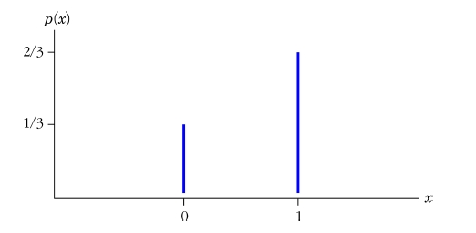
베르누이분포의 평균, 분산, 적률생성함수는 다음과 같다. \[E(X)=p, \hskip5pt Var(X)=p(1-p), \hskip5pt m(t)=pe^t+(1-p)\]
(증명) \[E(X)=0\cdot (1-p)+1\cdot p=p\] \[Var(X)=E(X^2)-(E(X))^2=0^2\cdot (1-p)+1^2\cdot 1-p^2=p(1-p)\] \[m(t)=E(e^{tX})=e^{0\cdot t}(1-p)+e^{1\cdot t}p=(1-p)+pe^t\]
한 번의 시행보다는 여러 번 시행 중에서 몇 번 성공할 것인가에 더 관심을 가질 경우를 고려하자. 즉, \(n\)번의 시행 중에서 성공한 횟수를 확률변수 \(X\)로 나타내면 확률변수 \(X\)는 이항분포를 따름
이항분포인 경우 베르누이시행의 조건에 독립적인 베르누이시행을 \(n\)번 시행한다는 조건이 부가됨
이항분포의 조건
각 베르누이 시행의 결과는 상호배타적인 두 사건으로 구분된다. 즉, 성공 아니면 실패의 두 사건으로 표현된다.
\(p\)로 표시되는 성공확률은 매 시행마다 일정하다.
각 시행은 서로 독립적이다.
동전 한개를 두 번 던지는 시행에서 앞면(\(H\))과 뒷면(\(T\))으로 구분하는 연속적인 베르누이시행을 생각해 보자. 이 경우 앞면이 나왔을 때를 성공이라고 한다면, 성공 횟수는 \(0\)에서 \(2\)사이의 정수 값을 취하는 확률변수 \(X\)가 된다. 이때의 경우를 표로 정리하면 다음과 같음
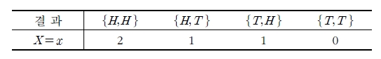
이때, \(P(X=0)=P(\{TT\})=1/4\)
\(P(X=1)=P(\{HT\})+P(\{TH\})=1/4+1/4=1/2\)
\(P(X=2)=P(\{TT\})=1/4\)
따라서 \(X\)의 확률분포는
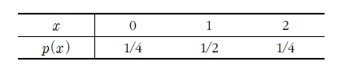
이항분포의 확률은 시행횟수와 각 시행에서의 성공확률에 의존하므로 \(p(x; n,p)\)로 표시
이항실험에서 \(n\)회의 시행 중에서 \(x\)번의 성공이 일어날 확률을 계산하자. 먼저 어떤 \(n\)번의 독립 시행에 있어서 \(x\)번의 성공과 \(n-x\)번의 실패가 일어났다고 하면, 각 시행은 독립이므로 그 확률은 \(p^x(1-p)^{n-x}\)가 됨
이제 이 실험에서 \(x\)번의 성공과 \(n-x\)번의 실패가 발생하는 모든 경우의 수는 \(\binom{n}{x}\)가 된다. 따라서 \(p^n(1-p)^{n-x}\)에 \(\binom{n}{x}\)를 곱하여 다음과 같은 일반적인 공식을 얻을 수 있음
여기서 \(\binom{n}{x}\)를 이항계수(binomial coefficient)라고 함
이항분포 \(n\)회 독립 시행에서 성공의 횟수를 나타내는 확률변수 \(X\)의 확률질량함수가 \[P(x; n,p)=\binom{n}{x}p^x(1-p)^{n-x}, \hskip5pt x=0, 1, 2, \ldots, n\] 와 같이 주어질 때 \(X\)는 모수 \((n,p)\)를 갖는 이항분포를 따른다고 한다.
- 확률변수 \(X\)가 모수 \((n,p)\)를 갖는 이항분포를 따를 때 \(X\sim b(n,p)\)로 표현
어떤 라디오 공장에서 하루에 생산되는 라디오가 600대라고 하자. 그 중 양품이 400대라고 할 때, 하루에 생산된 라디오 중 10대를 무작위로 추출하여 7대가 양품이고 3대가 불량품일 확률을 구하라.
(풀이)
라디오를 추출하는 시행은 각각 독립적으로 행해지고 각 라디오를 추출할 때마다 양품일 확률은 \(\frac{400}{600}=\frac{2}{3}\)로 동일하다고 하자. 양품이 나타나는 횟수를 성공 횟수로 하여 이를 \(X\)로 놓으면, 이는 \(n\)이 10이고 \(p=\frac{2}{3}\)인 이항분포를 따른다. 따라서 \(7\)대가 양품일 확률을 구해보면, \[p(7; 10,2/3)=\binom{10}{7}\left( \frac{2}{3}\right) ^7\left( \frac{1}{3}\right) ^3\approx 0.2601\]
폐렴환자 12명이 있다고 하자. 이 환자들 각각의 치유될 확률이 \(0.6\)으로 일정하다고 할 때, 다음 물음에 답하시오
적어도 5명이 회복될 확률
5명에서 7명 사이의 사람이 회복될 확률
정확히 6명이 회복될 확률
(풀이)
\(P(X\ge 5)=1-P(X<5)=1-\sum_{x=0}^4 b(x;12,0.6)=1-0.0573=0.9472\)
\(P(5\le X\le 7)=\sum_{x=5}^7 b(x;12,0.6)=\sum_{x=0}^7 b(x;12,0.6)-\sum_{x=0}^4 b(x;12,0.6)=0.5618-0.0573=0.5045\)
\(P(X=6)=\binom{12}{6}(0.6)^6(0.4)^6 \approx 0.1766\)
누적 이항 확률 \(p(X\le a)=\sum_{x=0}^a p(x)\)를 이용하면 원하는 이항확률을 쉽게 구할 수 있음(\(n\)과 \(p\)에 따른 누적 이항 확률 분포표는 부록 참조)
이항분포 \(b(n,p)\)의 평균, 분산, 적률생성함수는 다음과 같다. \[E(X)=np, \hskip5pt Var(X)=np(1-p), \hskip5pt m(t)=\{(1-p)+pe^t\}^n\]
(증명) \[\begin{aligned} m(t)=E(e^{tX})&=\sum_{x=0}^n e^{tx}\binom{n}{x}p^x(1-p)^{n-x}\\ &=\sum_{x=0}^n \binom{n}{x}(pe^t)^x(1-p)^{n-x}=\{pe^t+(1-p)\}^n\end{aligned}\]
적률생성함수를 1차, 2차 미분하면 다음과 같다. \[m'(t)=npe^t\{pe^t+(1-p)\}^{n-1}\] \[m''(t)=npe^t\{pe^t+(1-p)\}^{n-1}+n(n-1)(pe^t)^2\{pe^t+(1-p)\}^{n-2}\]
따라서 평균과 분산은 다음과 같다. \[E(X)=m'(0)=np\] \[Var(X)=E(X^2)-(E(X))^2=m''(0)-(np)^2=n(n-1)p^2+np-(np)^2=np(1-p)\]
\(n=12\)일 때, \(p\)가 각각 \(0.1, 0.5, 0.9\)일 때의 이항 확률분포
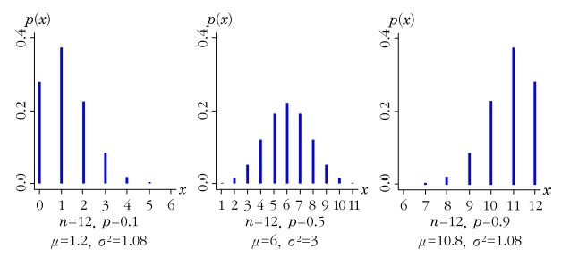
임의의 \(n\)에 대하여
\(p=0.5\)이면 이항분포는 좌우대칭이다.
\(p<0.5\)이면 오른쪽에서 왼쪽으로 밀은 모양인 왼쪽으로 치우친 비대칭(skewed to the right)이다.
\(p>0.5\)이면 왼쪽에서 오른쪽으로 밀은 모양인 오른쪽으로 치우친 비대칭(skewed to the left)이다.
\(p=0.1\)과 \(p=0.9\)의 분포는 정반대의 형태를 취한다.
\(p\)의 값에 관계없이 \(n\)이 커질수록 이항분포의 모양은 정규곡선에 접근한다.
한 회사에서 생산되는 제품이 불량품일 확률은 서로 독립적으로 \(0.01\)임을 알고 있다. 이 회사는 한 상자에 10개씩 포장하여 판매하는데 10개 중 2개 이상의 불량품이 발생하면 상자를 환불해준다. 판매된 상자가 반품되어 환불될 확률을 구하라.
(풀이)
확률변수 \(X\)를 판매된 상자 내에 발생된 불량품 개수라고 하면 이항분포 \(b(10,0.01)\)을 따르게 된다. 따라서 판매된 상자가 반품될 확률은 다음과 같다. \[\begin{aligned} P(X\ge 2)&=1-P(X=0)-P(X=1)\\ &= 1-\binom{10}{0}(0.01)^0(0.99)^{10}-\binom{10}{1}(0.01)^1(0.99)^9\\ &\approx 0.004\end{aligned}\]
확률변수 \(X\)가 모수 \(n\)과 \(p\)를 가지는 이항분포를 따른다면 \(Y=n-X\)의 분포도 이항분포를 따름을 증명하라.
(풀이)
\(y=n-x\), \(x=n-y\), \(p(x)=\binom{n}{x}p^x (1-p)^{n-x}\)이므로 \(x\) 대신 \(n-y\)를 대입하면 다음과 같이 정리된다. \[\begin{aligned} p(n-y)&=\binom{n}{n-y}p^{n-y}(1-p)^y\\ &=\frac{n!}{(n-y)!y!}p^{n-y}(1-p)^y \\ &=\binom{n}{y}(1-p)^yp^{n-y}\end{aligned}\]
따라서 \(Y=n-X\)는 모수 \(n\)과 \(1-p\)를 가지는 이항분포 \(b\sim (n,1-p)\)를 따른다.
5.1.3 다항분포
다항실험(multinomial experiment)
- 각 시행에서 가능한 결과가 셋 이상이 되는 실험
어떤 생산품을 품질에 따라 최고품, 중간품, 최하품으로 분류하는 실험
가능한 시행의 결과가 정확히 \(k\)가지인 \(E_1, E_2, \ldots, E_k\)로 되는 독립인 시행에서 각 시행은 \(k\)개 중 어느 하나가 일어난다고 하자. 그리고 \(n\)번의 독립시행에서 \(E_1\)이 일어날 확률을 \(p_1\), \(E_2\)가 일어날 확률을 \(p_2\), …, \(E_k\)가 일어날 확률을 \(p_k\)라 하자.(단, \(\sum_{i=1}^k x_i=n\), \(\sum_{i=1}^k p_i =1\))
각 시행이 독립이므로 \(E_1\)이 \(x_1\)번, \(E_2\)가 \(x_2\)번, …, \(E_k\)가 \(x_k\)번 발생할 확률은 \(p_1^{x_1} p_2^{x_2}\cdots p_k^{x_k}\)임
전체 \(n\)번 시행을 \(k\)개의 부분으로 나누되 첫 번째 부분이 \(x_1\), 두 번째 부분이 \(x_2\), …, \(k\)번째 부분이 \(x_k\)가 되도록 분할하는 경우의 수 \[\binom{n}{x_1,x_2,\ldots,x_k}=\binom{n}{x_1}\binom{n-x_1}{x_2}\cdots\binom{n-x_1-\cdots-x_{k-2}}{x_{k-1}}=\frac{n!}{x_1!x_2!\cdots x_k!}\]
다항분포 각 시행에서 \(p_1, p_2, \ldots, p_k\)의 확률로 \(k\)가지의 결과 \(E_1, E_2, \ldots, E_k\)중 어느 하나가 발생한다면 \(n\)번의 독립시행에서 각각 \(E_1, E_2, \ldots, E_k\)의 발생 횟수를 나타내는 확률변수 \(X_1, X_2, \ldots, X_k\)는 다항분포(multinomial distribution)를 따른다고 하며 확률분포는 다음과 같다. \[p(x_1, \ldots, x_k; n, p_1, \ldots, p_k)=\binom{n}{x_1, \ldots, x_k}p_1^{x_1}\cdots p_k^{x_k}\] 여기서 \(\sum_{i=1}^k x_i=n\)이고 \(\sum_{i=1}^k p_i=1\)이다.
다항분포는 확률변수가 벡터(vector)의 형태로 이루어져 있고 벡터를 이용하여 표현할 수 있으므로 확률변수벡터 \(\mathbf{X}=(X_1,\ldots, X_k)^T\)는 모수 \(n\)과 \(\mathbf{p}=(p_1, \ldots, p_k)^T\)를 가지는 다항분포라고 말할 수 있음
이를 확률질량함수로 표현하면 다음과 같다. \[p(\mathbf{x}; n, \mathbf{p})=\binom{n}{x_1, \ldots, x_k}p_1^{x_1}\cdots p_k^{x_k}\]
여기서 \(\mathbf{x}=(x_1,\ldots,x_k)^T\), 발생확률은 \(\mathbf{p}=(p_1,\ldots,p_k)^T\)이고 \(\mathbf{x}^T\mathbf{1}=n\), \(\mathbf{p}^T\mathbf{1}=1\)을 만족해야 함(\(\mathbf{1}=(1,\ldots, 1)^T\)는 모든 원소가 \(1\)인 합벡터(summing vector))
따라서 확률변수벡터 \(\mathbf{X}=(X_1,\ldots, X_k)^T\)가 모수 \((n,\mathbf{p}=(p_1,\ldots,p_k)^T)\)를 갖는 다항분포를 따를 때 \(\mathbf{X}\sim multinom(n,\mathbf{p})\) 또는 \(X_1, \ldots, x_k\sim multinom(n, p_1, \ldots, p_k)\)로 표현
공평한 주사위 한 개를 5번 던지는 시행에서 확률변수 \(X_1\)을 \(1\) 또는 \(2\)가 나오는 횟수, \(X_2\)를 \(3, 4, 5\)가 나오는 횟수, \(X_3\)를 \(6\)이 나오는 횟수라 할 때, \(X_1=2\), \(X_2=2\), \(X_3=1\)일 확률을 구하라.
- (풀이) \[f(2,2,1;5,\frac{2}{6},\frac{3}{6},\frac{1}{6})=\binom{5}{2,2,1}\left( \frac{2}{6}\right) ^2\left( \frac{3}{6}\right) ^2\left( \frac{1}{6}\right) ^1\approx 0.1389\]
성균관대학교 학생들의 혈액형을 모두 조사한 결과 다음과 같은 분포를 가지고 있다고 한다. 도서관 앞에서 임의의 학생 두 명을 만났을 때 두 명 모두 같은 혈액형을 가지고 있을 확률을 구하라.
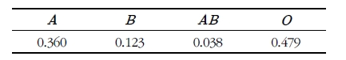
(풀이) 다항분포를 이용하여 임의의 두 명이 네 가지 혈액형으로 같을 확률을 각각 구하여 모두 더하면 우리가 원하는 확률을 얻을 수 있다. \[\begin{aligned} &p(2,0,0,0;2,0.360,0.123,0.038,0.479)\\ &+p(0,2,0,0;2,0.360,0.123,0.038,0.479)\\ &+p(0,0,2,0;2,0.360,0.123,0.038,0.479)\\ &+p(0,0,0,2;2,0.360,0.123,0.038,0.479)\\ &=0.360^2+0.123^2+0.038^2+0.479^2=0.376\end{aligned}\]
나타날 수 있는 결과가 두 가지인 경우\((k=2)\)는 다항분포가 이항분포로 됨
다항분포 \(multinom(n,p_1,\ldots,p_k)\)의 평균과 분산은 다음과 같다. \[E(X_1)=np_1, \ldots, E(X_k)=np_k\] \[Var(X_1)=np_1(1-p_1), \ldots, Var(X_k)=np_k(1-p_k)\]
5.1.4 초기하분포
초기하분포(hypergeometric distribution)는 이항분포와 밀접한 관련이 있음
\(N\)개의 모집단이 성공과 실패로 양분되어 있을 때 \(n\)개의 표본을 복원추출(sampling with replacement)하여 성공이 \(x\)개가 될 확률이 이항분포로부터 얻어진다면 초기하분포는 \(n\)개의 표본을 비복원추출(sampling without replacement)했을 때 얻어지는 확률분포
초기하분포의 기본가정
모집단은 \(N\)개의 원소로 구성된다.(유한모집단)
각 원소는 성공 또는 실패로 구분되어 있고 모집단에는 \(M\)개의 성공이 있다.
임의의 한 원소를 추출시 뽑힐 가능성이 모두 동일한 방식으로 \(n\)개의 원소를 비복원추출한다.
초기하분포의 확률변수 \(X\)는 \(n\)개의 표본에서 성공의 개수이고 이는 모수 \(n, N, M\)에 의존
표본크기 \(n\)이 모집단에서 성공의 개수인 \(M\)보다 적으면 가능한 \(X\)의 최대값은 \(n\)이고 표본크기 \(n\)이 모집단에서 성공의 개수인 \(M\)보다 크면 가능한 \(X\)의 최대값은 \(M\)
반대로 모집단에서 실패의 개수인 \(N-M\)이 \(n\)보다 작으면 가능한 \(X\)의 최소값은 \(0\)이고 \(n\)보다 크면 가능한 \(X\)의 최소값은 \(n-(N-M)\)
따라서 확률변수 \(X\)의 범위는 다음과 같음 \[max(0,n-(N-M))\le x \le min(n,M)\]
초기하분포 \(M\)개의 성공과 \(N-M\)개의 실패로 이루어진 \(N\)개의 모집단에서 \(n\)개의 표본을 비복원추출할 때 성공 중 추출된 개수를 확률변수 \(X\)로 하는 분포를 초기하분포라고 하고 확률질량함수는 다음과 같다. \[p(x; N,M,n)=\frac{\binom{M}{x}\binom{N-M}{n-x}}{\binom{N}{n}}, \hskip5pt max(0,n-(N-M))\le x \le min(n,M)\]
- 확률변수 \(X\)가 모수 \((N,M,n)\)을 갖는 초기하분포를 따를 때 \(X\sim hyper(N,M,n)\)으로 표현
초기하분포 \(hyper(N,M,n)\)의 평균과 분산은 다음과 같다. \[E(X)=n\cdot \frac{M}{N}, \hskip5pt Var(x)=n\cdot \frac{M}{N}\cdot \frac{N-M}{N}\cdot\frac{N-n}{N-1}\]
(증명) \[\begin{aligned} E(X)&=x\sum_{x=0}^n\frac{\binom{M}{x}\binom{N-M}{n-x}}{\binom{N}{n}}=n\cdot\frac{M}{N}\sum_{x=1}^n\frac{\binom{M-1}{x-1}\binom{N-M}{n-x}}{\binom{N-1}{n-1}}\\ &=n\cdot\frac{M}{N}\sum_{y=0}^{n-1}\frac{\binom{M-1}{y}\binom{N-M}{n-y-1}}{\binom{N-1}{n-1}}=n\cdot\frac{M}{N}\end{aligned}\]
여기서 \(\sum_{i=0}^m\binom{a}{i}\binom{b}{m-i}=\binom{a+b}{m}\) 식을 이용하면 \(\sum_{y=0}^{n-1}\frac{\binom{M-1}{y}\binom{N-M}{n-y-1}}{\binom{N-1}{n-1}}=1\)이다. \[\begin{aligned} E(X(X-1))&=x(x-1)\sum_{x=0}^n\frac{\binom{M}{x}\binom{N-M}{n-x}}{\binom{N}{n}}=n(n-1)\frac{M(M-1)}{N(N-1)}\sum_{x=2}^n\frac{\binom{M-2}{x-2}\binom{N-M}{n-x}}{\binom{N-2}{n-2}}\\ &=n(n-1)\frac{M(M-1)}{N(N-1)}\sum_{y=0}^{n-2}\frac{\binom{M-2}{y}\binom{N-M}{n-y-2}}{\binom{N-2}{n-2}}\\ &=n(n-1)\frac{M(M-1)}{N(N-1)}\end{aligned}\]
\[\begin{aligned} Var(X)&=E(X^2)-(E(X))^2=E(X(X-1))+E(X)-(E(X))^2\\ &=n(n-1)\frac{M(M-1)}{N(N-1)}-n\frac{M}{N}-n^2\frac{M^2}{N^2}\\ &=n\frac{M}{N}\left[ (n-1)\frac{M-1}{N-1}+1-n\frac{M}{N}\right] \\ &=n\frac{M}{N}\frac{N-M}{N}\frac{N-n}{N-1}\end{aligned}\]
- \((N-n)/(N-1)\)값을 유한모집단 수정계수(finite population correction factor; fpc)라고 함
경시대회에 참가한 \(10,000\)명의 학생 중 100명이 과거 경시대회 수상 경력이 있다고 한다. 참가자중 200명을 무작위로 택했을 경우 수상경력이 있는 학생이 3명 이하로 나타날 확률을 계산하라.
(풀이) \(X\)를 200명중에 나타나는 수상경력자의 수라 하면 \(X\)는 초기하분포 \(hyper(10000,200,100)\)을 따르며 구하는 정확한 확률은 \[P(X\le 3)=\sum_{x=0}^3 \frac{\binom{100}{x}\binom{9900}{200-x}}{\binom{10000}{200}}\]
\(\divideontimes\) 이항분포로 근사
성공률을 \(\frac{100}{10000}=0.01\)로 생각할 수 있고 전체 시행 수는 \(200\)이므로 이항분포 \(b(200,0.01)\)에 의한 근사값은 다음과 같다. \[P(X\le 3)\approx \sum_{x=0}^3\binom{200}{x}(0.01)^x(0.99)^{200-x}=0.8580\]
한 사탕 제조회사는 사탕 10개가 들어있는 봉지를 생산하고 있다. 품질관리사는 모든 사탕봉지에서 3개의 사탕씩 임의로 골라 조사하여 3개의 사탕 모두가 불량이 아닌 경우에만 정품으로 인정하고 있다. 이 사탕 제조회사는 생산라인에 문제로 전체 사탕 봉지의 \(30\%\)는 4개의 사탕이 불량이고 \(70\%\)는 1개의 사탕만이 불량이다. 이 품질관리사가 정품으로 인정하는 비율은 어떻게 되는지 구하라.
(풀이) 확률변수 \(X\)를 품질관리사가 조사할 때 정품의 사탕 개수라고 하면 이는 초기하분포를 따르게 된다. 다만 초기하분포의 모수가 서로 다르게 혼합되어 있으므로 이를 가중하여 계산하여야 한다. 즉, \[\begin{aligned} P(X=0)&=\frac{3}{10}P(X=0|hyper(10,4,3))+\frac{7}{10}P(X=0|hyper(10,1,3))\\ &=\frac{\binom{4}{0}\binom{6}{3}}{\binom{10}{3}}\times\frac{3}{10}+\frac{\binom{1}{0}\binom{9}{3}}{\binom{10}{3}}\times\frac{7}{10}=0.54\end{aligned}\]
따라서 품질관리사가 정품으로 인정할 비율은 \(54\%\)이다.
5.1.5 기하분포와 음이항분포
기하분포(gemetric distribution)와 음이항분포(negative binomial distribution)는 베르누이 실험에서 실패의 횟수에 관심이 있음
음이항분포의 실험조건
성공과 실패만으로 구성된 베르누이 시행이 독립적으로 반복된다.
각 시행의 성공확률은 \(p\)로 동일하다.
성공이 \(r\)번 발생할 때까지 시행을 계속한다.
음이항분포의 확률변수는 \(r\)번 성공할 때까지 총 실패한 횟수이고 성공의 횟수가 \(r\)로 고정된 반면 총 시행횟수는 임의적(random)임
기하분포의 확률변수는 처음으로 성공이 나타날 때까지 총 실패한 횟수로 \(r=1\)인 음이항분포와 같음
확률변수 \(X\)가 모수 \(p\)를 갖는 기하분포를 따를 때 \(X\sim geo(p)\)로 표현
음이항분포 성공확률이 \(p\)인 베르누이 시행을 성공이 \(r\)번 나타날 때까지 독립적으로 계속할 때 총 실패한 횟수가 확률변수인 분포는 음이항분포라고 하고 그 확률질량함수는 다음과 같다. \[p(x;r, p)=\binom{r+x-1}{x}p^r(1-p)^x=\binom{-r}{x}p^r(p-1)^x, \hskip5pt x=0, 1, 2,\ldots\]
\(\divideontimes \binom{-r}{x}=\frac{(-r)(-r-1)\cdots(-r-x+1)}{x!}=(-1)^x\frac{(r+x-1)\cdots(r+1)(r)}{x!}=(-1)^x\binom{r+x-1}{x}\)
확률변수 \(X\)가 모수 \((r,p)\)를 갖는 음이항분포를 따를 때 \(X\sim nb(r,p)\)로 표현
\(p=0.1, 0.3, 0.5\)일 때의 기하분포
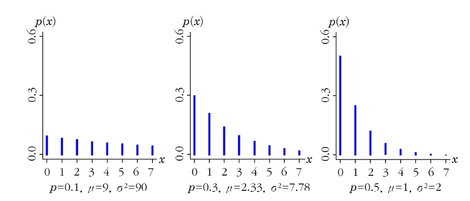
기하분포 \(geo(p)\)의 평균, 분산, 적률생성함수는 다음과 같다. \[E(X)=\frac{1-p}{p}, \hskip5pt Var(X)=\frac{1-p}{p^2}, \hskip5pt m(t)=\frac{p}{1-(1-p)e^t}\]
(증명) 기하분포는 음이항분포의 특수한 경우(\(r=1\))이므로 \[정리 5.7\] 음이항분포의 평균, 분산, 적률생성함수의 증명을 이용한다.
\[정리 5.6\] 음이항분포 \(nb(r,p)\)의 평균, 분산, 적률생성함수는 다음과 같다. \[E(X)=\frac{r(1-p)}{p}, \hskip5pt Var(X)=\frac{r(1-p)}{p^2}, \hskip5pt m(t)=\left[ \frac{p}{1-(1-p)e^t}\right] ^r\]
(증명) \[\begin{aligned} m(t)=E(e^{tX})&=\sum_{x=0}^\infty e^{tx}\binom{-r}{x}p^r\{-(1-p)\}^x\\ &=\sum_{x=0}^\infty \binom{-r}{x}p^r\{-(1-p)e^t\}^x=\left[ \frac{p}{1-(1-p)e^t}\right]^r\end{aligned}\]
위 식은 다음과 같은 식을 이용하여 계산된다. \[(1-x)^{-n}=\sum_{j=0}^\infty \binom{-n}{j}(-x)^j=\sum_{j=0}^\infty\binom{n+j-1}{j}x^j, \hskip5pt -1<x<1\] 적률생성함수를 1, 2차 미분하면 다음과 같다. \[m'(t)=p^r(-r)\{1-(1-p)e^t\}^{-r-1}\{-(1-p)e^t\}\] \[m''(t)=r(1-p)p^r\left[ (1-p)(r+1)e^{2t}\{1-(1-p)e^t\}^{-r-2}+e^t\{1-(1-p)e^t\}^{-r-1} \right]\]
따라서 평균과 분산은 미분한 적률생성함수에 \(t=0\)를 대입하여 구한다. \[\begin{aligned} E(X)&=m'(t)|_{t=0}=\frac{r(1-p)}{p}\\ Var(X)&=m''(t)|_{t=0}-(E(X))^2\\ &= r(1-p)p^r[(1-p)p^{-r-2}(r+1)+p^{-r-1}]-\left( \frac{r(1-p)}{p}\right) ^2\\ &=\frac{r(1-p)^2}{p^2} + \frac{r(1-p)}{p}=\frac{r(1-p)}{p^2}\end{aligned}\]
확률변수 \(X\)가 모수가 \(p\)인 기하분포를 따르면 다음이 성립한다. \[P(X\ge i+j | X\ge i)=P(X\ge j)\]
(증명) \[\begin{aligned} P(X\ge i+j | X\ge i)&=\frac{P(X\ge i+j)}{P(X\ge i)}=\frac{\sum_{x=i+j}^\infty p(1-p)^x}{\sum_{x=i}^\infty p(1-p)^x}\\ &=\frac{(1-p)^{i+j}}{(1-p)^i}=(1-p)^j\\ & =P(X\ge j)\end{aligned}\]
기하분포는 과거의 시행결과가 앞으로 일어날 시행에 영향을 주지 않음. 이러한 성질을 무기억성(memoryless property)이라고 함
확률변수 \(X\)가 기하분포를 따를 때 \(X+1\)은 총 시행 횟수를 의미하고 \(E(X+1)=1/p\)이므로 처음 성공할 때까지 필요한 총 시행 횟수의 평균은 성공률의 역수임
만약 \(p=0.25\)이면 첫 성공이 나타날 때까지 평균적으로 4번의 시행이 필요하다는 의미
이러한 특성 때문에 기하분포를 따르는 확률변수를 이산형 대기시간(waiting time) 확률변수라고 함
첫 성공이 나타날 때까지의 총 시행 횟수(\(Y=X+1\))를 확률변수로 하면 \(Y\)에 대한 확률질량함수는 \[p(y; p)=p(1-p)^{y-1}, \hskip5pt y=1, 2, \ldots\] \[E(Y)=1/p, \hskip10pt Var(Y)=(1-p)/p^2, \hskip10pt m(t)=pe^t/\{1-(1-p)e^t\}\]
어떤 복권 당첨확률은 0.00015이라 하자. 철수는 매주 복권을 구입하는데, 복권에 당첨되면 복권을 그만 구입하기로 하였다. 1년(52)주 안에 복권에 당첨될 확률이 얼마가 되는지 계산하라. 또한 복권에 당첨되기 위해서는 평균적으로 몇 주 동안 복권을 구입해야 하는지 계산하라.
(풀이) 복권에 당첨되는 주를 확률변수 \(X\)라고 하면 \(X\)는 기하분포 \(geo(0.00015)\)를 따르게 된다. 따라서 일 년 이내에 당첨될 확률은 다음과 같다. \[P(X\le 51)=\sum_{x=0}^{51}p(1-p)^x=\sum_{x=0}^{51}(0.00015)(0.99985)^x \approx 0.0078\]
\(E(X+1)=1/p\)이므로 \(1/0.00015\), 즉 평균적으로 \(6,667\)주(약 \(128\)년) 동안 복권을 구입해야 당첨될 수 있다.
\(Y\)를 성공률 \(p\)의 기하분포를 따르는 확률변수라고 하자. 양의 정수 \(a\)에 대해 \(P(X\ge a)=(1-p)^a\)임을 증명하라.
(풀이) \(P(Y\ge a)=1-P(Y<a)=1-\sum_{y=0}^{a-1}p(1-p)^y =1-p\sum_{y=0}^{a-1}(1-p)^y\)
위 식에서 합기호(summation)가 포함된 항은 기하급수로 다음과 같이 정리할 수 있다. \[\begin{aligned} \sum_{y=0}^{a-1}(1-p)^y=S&=1+(1-p)+(1-p)^2\cdots +(1-p)^{a-1}\\ (1-p)S&=(1-p)+(1-p)^2\cdots +(1-p)^{a-1}+(1-p)^a\end{aligned}\]
두 식의 차를 구하면 \(pS=1-(1-p)^a, \hskip5pt S=\frac{1-(1-p)^a}{p}\)이므로 다음과 같이 구할 수 있다. \[P(Y\ge a)=1-p\frac{1-(1-p)^a}{p}=1-\{1-(1-p)^a\}=(1-p)^a\]
2011년 프로야구에서 KIA와 SK가 한국시리즈(7전4선승제)에서 만났다. 각 게임에서 SK가 이길 확률은 독립적으로 \(0.55\)이다. KIA가 한국시리즈 5차전에서 우승할 확률을 계산하라. 또한 이 시리즈가 7차전까지 가서 끝날 확률을 계산하라.
(풀이)
KIA가 5차전에서 우승한다는 의미는 한국시리즈가 4승1패로 끝난다는 것이므로 KIA가 지는 게임 수 \(X\)를 확률변수로 하는 음이항분포 \(nb(4,0.45)\)를 이용하면 된다. 우리가 구하고자 하는 확률은 \(P(X=1)\)이므로 다음과 같이 계산한다. \[P(X=1)=\binom{4+1-1}{1}(0.45)^4(0.55)^1 \approx 0.0902\]
이항분포를 이용할 경우 \[P(X=3)\times 0.45=\binom{4}{3}(0.45)^3(0.55)^1\times 0.45\approx 0.0902\]
이 시리즈가 7차전까지 가서 끝난다는 의미는 KIA 또는 SK가 4승 3패로 승리한다는 의미이므로 KIA가 지는 게임수 \(X\)를 확률변수로 하는 음이항분포 \(nb(4,0.45)\)에서 \(P(X=3)\)과 SK가 지는 게임 수 \(X\)를 확률변수로 하는 음이항분포 \(nb(4,0.55)\)에서 \(P(X=3)\)을 더해 주면 된다. 따라서 이를 계산하면 다음과 같다. \[\begin{aligned} &P(X=3|nb(4,0.45))+P(X=3|nb(4,0.55)) \\ &=\binom{4+3-1}{3}(0.45)^4(0.55)^3 +\binom{4+3-1}{3}(0.55)^4(0.45)^3\\ &\approx 0.3032\end{aligned}\]
이항분포를 이용할 경우 \[P(X=3)=\binom{6}{3}(0.45)^3(0.55)^3\approx 0.3032\]
5.1.6 포아송분포
단위시간이나 단위면적 또는 단위공간에서 발생한 사건의 수가 따르는 분포를 포아송분포(Poisson distribution)라고 함
주어진 시간간격은 일분이 될 수도 있고 하루, 일주일, 한 달, 혹은 일 년이 될 수도 있음
일정 시간동안 맥주를 마시고 화장실에 간 횟수
골프시즌 중에 비로 인해 연기된 경기의 수
1 에이커 당 들쥐의 수
배양기 안에 있는 박테리아의 수
한 페이지 당 오타의 수
포아송분포 단위시간, 단위면적, 단위공간 등에서 발생한 사건의 수를 확률변수 \(X\)로 하는 확률분포를 포아송분포(Poisson distribution)라고 하고 확률질량함수는 다음과 같다. \[p(x;\lambda)=\frac{\lambda^x e^{-\lambda}}{x!}, \hskip5pt x=0,1,2,\ldots\] 여기서 \(\lambda(<0)\)는 단위시간 또는 단위공간에서 발생하는 사건의 평균이다.
여기서 \(e\)는 자연로그(natural logarithm)의 밑수(base number)로 자연상수(자연대수) 또는 오일러의 수라고 하고 약 \(2.71828\)인 무리수(irrational number)이자 초월수(transcendental number)
\(e=\lim_{n\rightarrow \infty}(1+\frac{1}{n})^n\) 또는 \(e=\sum_{n=0}^\infty \frac{1}{n!}\)
지수함수(exponential function)라고도 하며 \(e^x\)또는 \(exp(x)\)로 표현함. 즉, \(e=exp(1)\)과 같음
확률변수 \(X\)가 모수 \(\lambda\)를 갖는 포아송분포를 따를 때 \(X\sim pois(\lambda)\)로 표현
포아송분포 \(pois(\lambda)\)의 평균, 분산, 적률생성함수는 다음과 같다. \[E(X)=\lambda, \hskip10pt Var(X)=\lambda, \hskip10pt m(t)=e^{\lambda (e^t-1)}\]
(증명) \[\begin{aligned} m(t)=E(e^{tX})=\sum_{x=0}^\infty \frac{e^{tx}e^{-\lambda}\lambda^x}{x!}=e^{-\lambda}\sum_{x=0}^\infty \frac{(\lambda e^t)^x}{x!}=e^{-\lambda}e^{\lambda e^t}\end{aligned}\]
적률생성함수를 1, 2차 미분하면 다음과 같다. \[m'(t)=\lambda e^{-\lambda}e^t e^{\lambda e^t}, \hskip10pt m''(t)=\lambda e^{-\lambda}e^t e^{\lambda e^t}[\lambda e^t+1]\]
미분된 적률생성함수를 이용하여 \[E(X)=m'(0)=\lambda\] \[Var(X)=E(X^2)-E(X)^2=m''(0)-\lambda^2=\lambda(\lambda+1)-\lambda^2=\lambda\]
\(\lambda=0.1,\hskip5pt \lambda=1, \hskip5pt \lambda=4\)일 때의 포아송분포
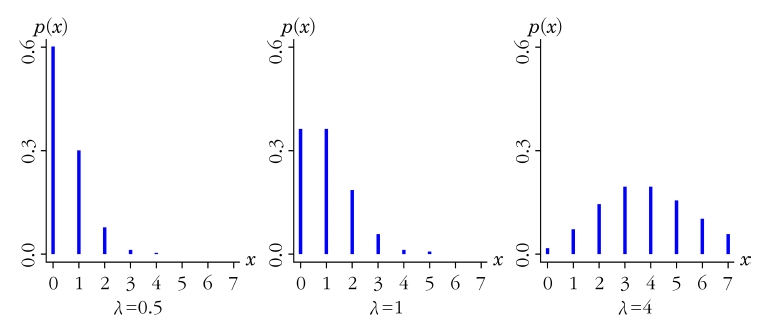
포아송분포를 이용하여 다음을 계산하라.
어느 회사에 오후 2시부터 4시 사이에 1분당 평균 1.4회 전화가 걸려온다고 하자. 걸려오는 전화횟수가 포아송분포를 따른다면 1분에 3회 전화가 걸려올 확률은 얼마인가?
어느 슈퍼마켓은 1분당 평균 2명이 온다고 한다. 어느 1분 중 적어도 3명의 손님이 올 확률은 얼마인가?
(풀이)
걸려오는 전화횟수를 \(X\)라 하면 \(X\)는 \(\lambda=1.4\)인 포아송분포를 따른다. 따라서 구하고자 하는 확률은 다음과 같다. \[p(3; 1.4)=\frac{1.4^3 e^{-1.4}}{3!}\approx 0.1128\]
\(X\)를 1분단 슈퍼마켓에 오는 손님의 수라고 하면 \(\lambda=2\)인 포아송분포를 따르므로 구하고자 하는 확률은 다음과 같다.
\[\begin{aligned} P(X\ge3)&=1-P(X\le 2)\\ &= 1-\sum_{x=0}^2 p(x;2)=1-0.68767=0.3233\end{aligned}\]
이항분포의 포아송분포 근사 : 이항분포는 포아송분포로 근사 시킬 수 있음
이항분포를 따르는 확률에 대해 \(\lambda=np\)로 고정시킨 상태에서 \(n\)이 크고 \(p\)가 작아 \(\lambda=np\)가 크지 않을 경우 이항확률은 포아송확률에 가까워짐
즉, 포아송분포를 이용하여 \(n\)이 크고 \(\lambda=np\)가 작을 때 이항확률을 쉽게 그리고 정확하게 근사확률을 구할 수 있음
엔진을 생산하는 공장에서 하루에 100개의 엔진을 생산한다고 한다. 그리고 이 공장에서 생산된 엔진의 불량률은 0.01이라고 할 때, 불량품이 두 개 생산될 확률을 구하라.
(풀이) \(X\)를 불량품의 개수라 할 때, \(X\)는 \(n=100\), \(p=0.01\)인 이항분포를 따르므로 \(P(X=2)\)의 정확한 확률은 \[P(X=2)=\binom{100}{2}(0.01)^2 (0.99)^{98} =0.185\]
포아송분포를 이용한 근사 확률을 구하면, \(\lambda=np=100\times0.01=1\)이므로 \[P(X=2)=\frac{1^2e^{-1}}{2!}=\frac{e^{-1}}{2}=0.184\]
이항확률을 포아송 확률로 근사시킬 때 얼마나 정확한지를 알기 위해 \(n=100\), \(p=0.01\)인 경우 이항확률과 포아송 확률을 계산하여 비교한 결과
이항분포와 포아송분포의 확률값
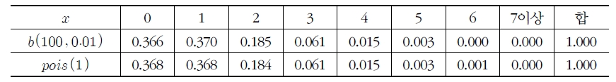
성인 남자의 사망률이 0.002라고 한다. 어떤 생명보험 회사에서는 이 확률을 기초로 하여 보험 상품을 만들었다고 한다. 이 보험에 가입한 성인 남자 3,000명 중 정확히 7명이 보험금을 탔다고 한다. 이 확률을 구하라.
(풀이) \(X\sim b(3000,0.002)\)이므로 이항확률분포로부터의 정확한 확률은 \[P(X=7)= \frac{3000!}{7!2993!}(0.002)^7(0.9998)^{2993}\]
포아송분포로 근사시키기 위해 \(\lambda=3000\times0.002=6\) \[P(X=7)\approx \frac{\lambda^7 e^{-\lambda}}{7!}=\frac{6^7e^{-6}}{7!}=0.1377\]
누적 포아송분포표로부터 구할 확률은 \[P(X=7)=P(X\le 7)-P(X\le 6)=0.744-0.606=0.138\]
5.2 연속형 확률분포
5.2.1 연속형 균일분포
- 이산형인 경우와 마찬가지로 연속형 확률분포 중에서 가장 간단한 분포는 연속형 균일분포(continuous uniform distribution)
연속형 균일분포의 확률밀도함수는 다음과 같다. \[f(x; a,b)=\frac{1}{b-a}, \hskip5pt a<x<b\]
연속형 균일분포는 확률변수가 취하는 모든 구간에서의 확률이 일정
확률변수 \(X\)가 모수 \((a,b)\)를 갖는 연속형 균일분포를 따를 때 \(U \sim (a,b)\)로 표현
모수가 \(a, b\)인 연속형 균일분포의 확률밀도함수와 누적분포함수
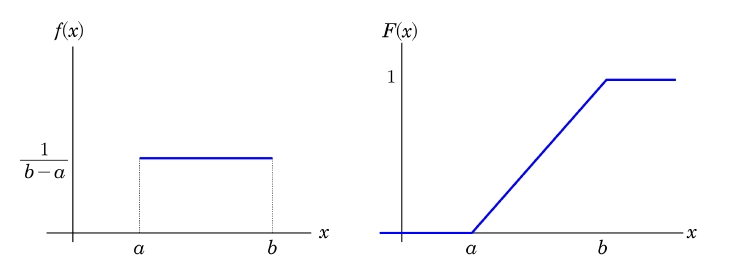
(증명) \[E(X)=\int_a^b x\frac{1}{b-a}dx=\frac{b^2-a^2}{2(b-a)}=\frac{a+b}{2}\] \[\begin{aligned} Var(X)=E(X^2)-E(X)^2&=\int_a^b x^2\frac{1}{b-a}dx-\left( \frac{a+b}{2}\right) ^2\\ &=\frac{b^3-a^3}{3(b-a)}-\frac{(a+b)^2}{4}=\frac{(b-a)^2}{12}\end{aligned}\] \[m(t)=E(e^{tX})=\int_a^b\frac{1}{b-a}dx=\frac{e^{bt}-e^{at}}{(b-a)t}\]
아침 출근시간의 지하철은 4분 간격으로 도착한다. 이 시간대에 역에 갔을 때 다음 물음에 답하라.
대기시간을 확률변수 \(X\)라고 할 때 \(X\)의 확률밀도함수를 구하라.
확률변수 \(X\)의 평균과 분산을 구하라.
(풀이)
구간 \(0<X<4\)에서 지하철이 도착할 확률은 동일하다. 따라서 확률밀도함수는 \[f(x)=\frac{1}{4}, \hskip5pt 0<x<4\]
평균과 분산은 다음과 같다. \[E(X)=\frac{4+0}{2}=2, \hskip10pt Var(X)=\frac{(4-0)^2}{12}=\frac{4}{3}\]
5.2.2 정규분포
통계학의 모든 분야에서 가장 중요한 연속형 분포는 가우스(Gaussian)분포라고도 불리는 정규분포(normal distribution)임
정규분포는 표본을 통한 통계적 추정 및 가설검정이론의 기본이 되며, 실제로 우리가 사회적\(\cdot\)자연적 현상에서 접하는 여러 자료들의 분포도 정규분포와 비슷한 형태를 가짐
정규분포의 그래프는 종모양의 곡선으로 자연과학, 기업 그리고 각종 연구분야에서 발생하는 여러 현상들을 근사적으로 기술하는데 이용
기상실험, 강우량조사 그리고 부품의 측정 등과 같은 물리적 실험은 정규분포에 적합하다는 것이 잘 알려져 있으며, 특히 과학적 측정오차(error of measurement)는 정규분포와 거의 일치함. 또한 많은 분포들이 정규분포에 의해서 근사 되어짐
정규확률변수의 확률분포는 평균 \(\mu\)와 표준편차 \(\sigma\)에 의해서 결정되기 때문에 정규확률변수 \(X\)의 밀도함수를 \(f(x; \mu, \sigma)\)로 표시하며 정규분포를 \(N(\mu, \sigma^2)\)으로 표현
정규분포 평균 \(\mu\)와 표준편차 \(\sigma\)를 가지는 정규확률변수 \(X\)의 확률밀도함수는 다음과 같다. \[f(x; \mu, \sigma)=\frac{1}{\sqrt{2\pi}\sigma}e^{-\frac{(x-\mu)^2}{2\sigma^2}}, \hskip5pt -\infty<x<\infty\] 여기서 \(\pi\)는 원주율, \(e\)는 자연상수이다.
정규분포의 확률밀도함수
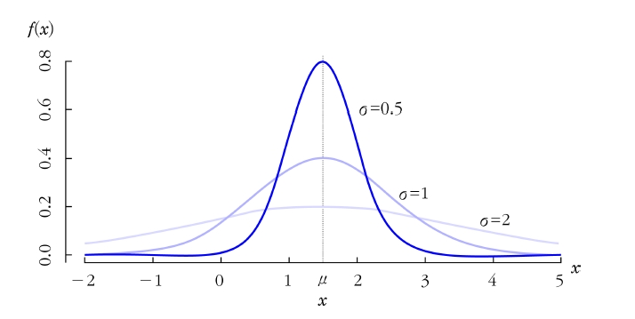
정규분포 \(N(\mu, \sigma^2)\)을 따르는 확률변수 \(X\)의 평균, 분산, 적률생성함수는 다음과 같다. \[E(X)=\mu, \hskip10pt Var(X)=\sigma^2, \hskip10pt m(t)=e^{\mu t+\sigma^2 t^2/2}\]
(증명) \[\begin{aligned} m(t)=E(e^{tX})&=e^{t\mu}E(e^{t(X-\mu)})\\ & = e^{t\mu}\int_{-\infty}^{\infty}\frac{1}{\sqrt{2\pi}\sigma}e^{t(x-\mu)}e^{-(1/2\sigma^2)(x-\mu)^2}dx\\ &=e^{t\mu}\int_{-\infty}^{\infty}\frac{1}{\sqrt{2\pi}\sigma}e^{-(1/2\sigma^2)[(x-\mu)^2-2\sigma^2t(x-\mu)]}dx\\\end{aligned}\]
여기서 지수함수의 대괄호 내의 식을 정리하면 다음과 같다. \[\begin{aligned} (x-\mu)^2-2\sigma^2t(x-\mu)&=(x-\mu)^2-2\sigma^2t(x-\mu)+\sigma^4t^2-\sigma^4t^2\\ &=(x-\mu-\sigma^2t)^2-\sigma^4t^2\end{aligned}\]
이를 이용하면 적률생성함수는 다음과 같이 풀 수 있다. \[m(t)=e^{\mu t}e^{\sigma^2t^2/2}\frac{1}{\sqrt{2\pi}\sigma}\int_{-\infty}^{\infty}e^{-(x-\mu-\sigma^2t)^2/2\sigma^2}dx\]
다음과 같은 정규분포의 성질에 의해 \[\int_{-\infty}^{\infty}\frac{1}{\sqrt{2\pi}\sigma}e^{-(x-\mu-\sigma^2t)^2/2\sigma^2}dx=1\]
이므로 적률생성함수는 \[m(t)=e^{\mu t}e^{\sigma^2t^2/2}\]
가 된다.
적률생성함수를 1, 2차 미분하면 다음과 같다. \[m'(t)=(\mu+t\sigma^2)e^{\mu t+\sigma^2t^2/2}\] \[m''(t)=(\mu+t\sigma^2)^2e^{\mu t+\sigma^2t^2/2}+\sigma^2e^{\mu t+\sigma^2t^2/2}\]
이를 이용하면 평균과 분산을 구할 수 있다. \[E(X)=m'(0)=\mu\] \[Var(X)=E(X^2)-E(X)^2=m''(0)-\mu^2=\sigma^2\]
모수가 서로 다른 확률분포는 비교하기 어려우므로 이를 고정할 필요가 있음. 이러한 경우 모수인 평균과 분산을 \(0\)과 \(1\)로 고정하는 방법을 사용하는데 확률변수 \(X\)를 다음과 같이 변환하여 평균이 \(0\), 분산이 \(1\)이 되게 하는 방법을 표준화(standardization)라고 함 \[Z=\frac{X-\mu}{\sigma}\]
변환 후 \(E(Z)=0\), \(Var(Z)=1\)이 되지만 \(Z\)의 확률분포는 \(X\)의 확률분포를 그대로 유지함
즉, \(X\)가 연속형 균일분포를 따른다면 변환한 \(Z\)도 연속형 균일분포를 따르게 됨. 예를 들어 \(X\sim U(a,b)\)이면 \(Z\sim U(-\sqrt{3},\sqrt{3})\)을 따름
마찬가지로 \(X\)가 정규분포를 따른다면 변환한 \(Z\)도 평균과 분산이 \(\mu=0\)와 \(\sigma^2=1\)인 정규분포를 따르며, 이를 표준정규분포(standard normal distribution)라고 함(\(Z\sim N(0,1)\))
표준정규분포는 확률변수를 일반적으로 \(X\)대신 \(Z\)를 사용하므로 \(Z\)분포라고도 불림
표준정규분포가 중요한 이유는 정규분포 확률밀도함수의 어떤 특정 구간에 대한 면적(확률)을 구할 경우 어떠한 정규분포든 간에(즉, \(\mu\), \(\sigma\)에 상관없이) 정규확률변수 \(X\)를 \(\mu\)가 \(0\)이고, \(\sigma\)가 \(1\)인 정규분포로 표준화시킴으로써 이미 계산된 표준정규분포표를 이용하면 면적(확률)을 쉽게 구할 수 있기 때문
\[정의 5.11\] 표준정규분포 평균이 \(0\)이고 분산이 \(1\)인 정규분포를 표준정규분포라 하고 표준정규분포를 따르는 확률변수 \(Z\)의 확률밀도함수는 다음과 같다. \[f(z)=\frac{1}{\sqrt{2\pi}}e^{-\frac{1}{2}z^2}, \hskip5pt -\infty<z<\infty\]
표준정규확률변수의 확률밀도함수는 \(\phi(z)\)로 표시하며 확률을 구할 때 필요한 누적분포함수는 \(\Phi(z)\)로 표시함 \[\Phi(z)=\int_{-\infty}^z \phi(t)dt\]
정규분포의 누적분포함수
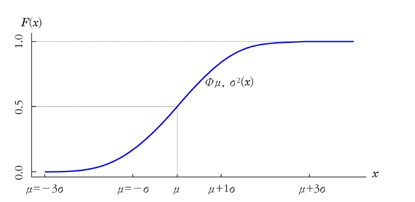
표준정규확률변수 \(Z\)값은 \(X\)와 \(\mu\)사이의 표준편차 곱만큼의 거리를 의미함. 예를 들어 \(Z=1.5\)의 의미는 \(X\)의 값이 평균보다 \(1.5\times\)표준편차만큼 떨어져 있음을 의미함
\(X\)가 평균이 \(\mu\)이고 분산이 \(\sigma^2\)인 정규분포를 따른다면 다음과 같이 확률을 구할 수 있음
\(X\sim N(\mu, \sigma^2)\)이면 다음이 성립한다. \[\begin{aligned} P(a<X<b)&=P(\frac{a-\mu}{\sigma}<\frac{X-\mu}{\sigma}<\frac{b-\mu}{\sigma})\\ &=P(\frac{a-\mu}{\sigma}<Z<\frac{b-\mu}{\sigma}), \hskip10pt Z\sim N(0,1)\\ &=\Phi(\frac{b-\mu}{\sigma})-\Phi(\frac{a-\mu}{\sigma})\end{aligned}\]
주어진 \(z\)값보다 작은 영역의 확률(\(\Phi(z)\))은 이미 계산이 되어 \(<\)부록 II\(>\)의 표준정규분포표에서 구할 수 있음
예를 들어 \(P(Z>1.5)\)인 확률은 \(1-P(Z\le 1.5)=0.0668\)이고 \(P(Z<-1.5)\) 역시 0.0668임(\(\Phi(z)=1-\Phi(-z)\))
즉, 정규확률변수가 평균으로부터 양의 방향으로 \(1.5\times\)표준편차 이상 떨어져 있을 확률은 0.0668임을 의미
표준정규분포에서 \(P(Z>1.5)\)일 확률
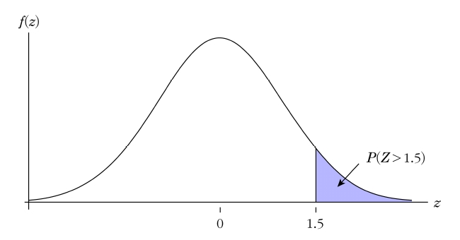
\(X\)가 평균이 10이고 분산이 \(25\)인 정규분포를 따를 때 \(X\)가 \(15\)와 \(22\) 사이에 있을 확률 구하라.
(풀이) \[\begin{aligned} P(15<X<22)&=P(1<Z<2.4)=\Phi(2.4)-\Phi(1)\\ &=0.992-0.841=0.151\end{aligned}\]
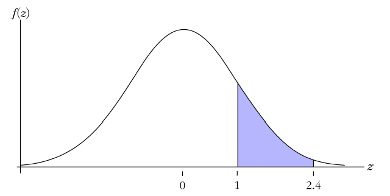
300명의 성적이 평균 75점, 표준편차가 15점인 정규분포를 따른다고 하자.
60점 이상 85점 미만의 인원은 몇 명쯤 될것으로 기대되는가?
성적의 상위 20%에게 평점 \(A\)를 준다고 할 때, 몇 점 이상이 \(A\)를 받게 되겠는가?
(풀이)
임의의 학생이 60점 이상 85점 미만일 확률은 \[\begin{aligned} P(60\le X \le 85)&=P\left( \frac{60-7}{15}\le \frac{X-75}{15}<\frac{85-75}{15}\right) \\ &=P(-1\le Z <0.67)\\ &=\Phi(0.67)-\Phi(-1)=0.749-0.159=0.59\end{aligned}\]
이므로 300을 곱하면 \(300\times 0.59=177\)이다. 즉, 60점 이상 85점 미만의 인원은 약 177명일 것으로 기대된다.
\(A\)학점의 최하점을 \(x_0\)라고 하면 \(P(X\ge x_0)=0.2\)가 되는 \(x_0\)를 구하면 된다. \[P(X\ge x_0 )=P\left( \frac{X-75}{15}\ge \frac{x_0-75}{15}\right) =P(Z\ge \frac{x_0-75}{15})\]
표준정규분포표에서 \(P(Z\ge z_0 )=0.2\)인 \(z_0\)값을 찾아보면 \(z_0 \approx 084\)이므로 \(x_0\)와 \(z_0\)의 관계식은 다음과 같다. \[z_0 = \frac{x_0 -75}{15}=0.84, \hskip5pt x_0=87.6\]
즉, 87.6점 이상이 \(A\)학점을 받는다.
정규분포에서 \(\mu \pm k \sigma\), \(k=1, 2, 3\)에 따른 가운데 구간의 면적
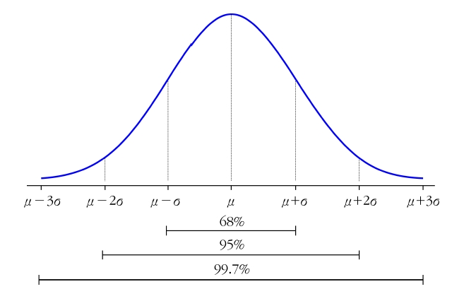
5.2.3 이항분포와 포아송분포의 정규근사
이항분포나 포아송분포의 정확한 확률 대신 정규분포를 이용하여 근사확률을 사용할 수 있음. 즉, \(np\) 또는 \(\lambda\)가 크면 확률을 구하기 위해 정규분포로 근사 가능
\(n=15\), \(p=0.6\)인 이항분포와 \(\mu=9\), \(\sigma^2=3.6\)인 정규분포
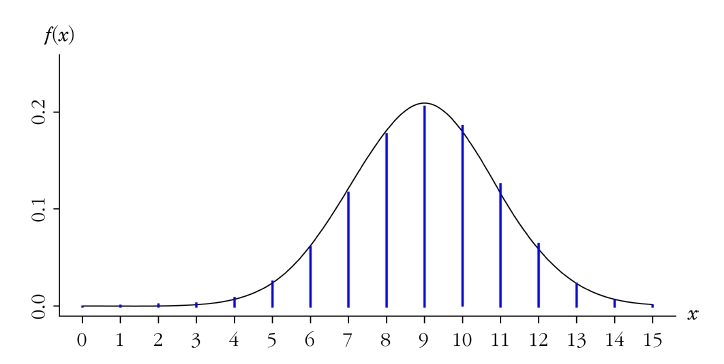
\(\lambda=10\)인 포아송분포와 \(\mu=10\), \(\sigma^2=10\)인 정규분포
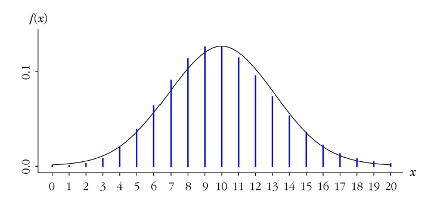
\(X\)가 \(\mu=np\)이고, \(\sigma^2=npq\), \(q=1-p\)인 이항분포를 따른다면 \(n\rightarrow \infty\)일 때 \[Z=\frac{X-np}{\sqrt{npq}}\] 의 극한분포는 표준정규분포 \(N(0,1)\)이 된다.
\(X\)가 \(\mu=\lambda\)이고, \(\sigma^2=\lambda\)인 포아송분포를 따른다면 \(\lambda\)가 커져감에 따라 \[Z=\frac{X-\lambda}{\sqrt{\lambda}}\] 의 분포는 표준정규분포 \(N(0,1)\)에 근사해간다.
이산형 분포에서 \(P(X\le 7)\)의 의미는 \(P(X<8)\) 또는 \(\sum_{x=0}^7 P(X=x)\)이므로 \(X=7\)일 때의 확률이 포함됨. 그러나 연속형 분포에서 \(P(X\le 7)\)의 의미는 \(P(X<7)\)과 같음
따라서 이산형 분포를 연속형 분포인 정규분포로 근사시키기 위해서는 \(P(X\le 7)\)를 \(P(X<7.5)\)로 계산하고 이러한 방법을 연속성 수정(continuity correction)이라고 함
연속성 수정을 하여 계산한 값은 다음과 같음 \[P(X\le 7)=P(X<7.5)\approx P(Z\le \frac{7.5-9}{\sqrt{3.6}})=P(Z\le-0.79)=0.2148\]
이는 이항분포를 사용한 정확한 확률 \(P(X\le 7)=\sum_{x=0}^7 P(X=x)=0.2131\)에 매우 근사함
이항분포는 \(n\)이 크고 \(p\)가 \(0.5\)에 가까우면 정규분포로의 근사가 잘됨. 이항분포의 \(p\)가 \(0.5\)에 가까울 때 정규근사가 잘 되는 이유는 좌우대칭에 가까운 분포로 정규분포와 비슷하기 때문
일반적으로 \(p\)가 \(0.5\)에 가깝거나 또는 \(min(n(1-p), np)>5\)이면 정규근사가 잘됨.
포아송분포는 \(\lambda\)가 크면 좌우대칭에 가까운 분포가 되어 정규분포에 근사가 잘되며 일반적으로 \(\lambda\ge 10\)이면 정규근사를 사용할 수 있음
이는 이항분포를 사용한 정확한 확률 \(P(X\le 7)=\sum_{x=0}^7 P(X=x)=0.2131\)에 매우 근사함
\(n=10\), \(p=0.1\)인 이항분포의 정규근사
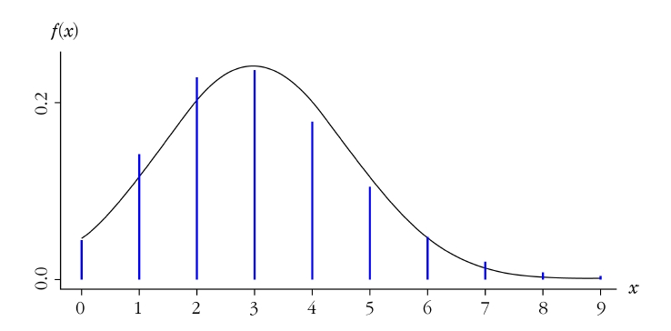
\(\lambda=5\)인 포아송분포의 정규근사
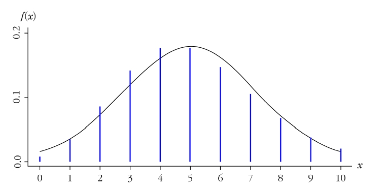
어느 계산기 칩을 만드는 회사에서 계산기 칩 500개가 들어있는 로트에서 무작위로 100개의 표본을 추출해서 불량품이 1개 이하이면 그 로트가 합격이라고 판정한다. 칩의 불량률이 \(10\%\)일 때 로트를 합격시킬 확률을 구하라.
(풀이)
확률변수 \(X\)를 불량품의 개수라고 하면, 이는 100번의 시행에서 불량품이 1개 이하가 나올 확률이므로 확률변수 \(X\)는 이항분포 \(b(100,0.1)\)을 따른다. 그러나 충분히 많은 시행을 하므로 정규분포로 근사시킬 수 있다. \[\mu=np=(100)(0.1)=10, \hskip10pt \sigma=\sqrt{npq}=\sqrt{(100)(0.1)(0.9)}=3\] \[P(X<1.5)\simeq P(Z<\frac{1.5-10}{3})=P(Z<-2.83)=0.002\] \[P(X\le 1)=\binom{100}{0}0.1^00.9^{100}+\binom{100}{1}(0.1)0.9^{99}=0.0003217\]
수요일 오전 10시부터 오후 3시까지는 전기요금 고지서에 대한 문의전화가 평균적으로 1시간에 42건 걸려온다. 어느 날 1시간 동안 문의 전화가 50건 이상 올 확률을 구하라.
(풀이)
전기요금에 대한 문의전화 건수는 포아송분포 \(pois(42)\)를 따르므로 50건 이상올 확률은 수계산으로 계산할 수 없다. 먼저 컴퓨터를 이용하여 정확한 확률을 구해보면 다음과 같다. \[P(X\ge 50)=1-\sum_{x=0}^{49}\frac{e^{-42}42^x}{x!}=0.1250\]
연속성 수정을 이용한 정규근사값은 다음과 같다. \[\begin{aligned} P(X\ge 50)&=P(X>49.5)=1-P(X<49.5)\\ &\approx 1-P(Z<\frac{49.5-42}{\sqrt{42}})\\ &=1-P(Z<1.16)=0.1228\end{aligned}\]
5.2.4 지수분포와 감마분포
포아송분포의 확률변수는 단위시간이나 단위면적 당 발생하는 사건의 횟수의 이산형 확률변수이지만 지수분포(exponential distribution)와 감마분포(gamma distribution)의 확률변수는 사건 사이의 시간 간격이나 공간 간격에 대한 연속형 확률변수를 의미
단위시간의 구간에서 발생하는 사건의 수가 포아송분포를 따른다면 연속적인 사건 사이의 간격의 길이, 즉 사건이 일어날 때까지 걸리는 시간은 지수분포와 감마분포를 따른다고 할 수 있음
e.g) 맥주를 마시고 단위시간당 화장실에 간 횟수는 포아송분포를 따르고 맥주를 마시고 화장실에 갔을 경우 다음번에 화장실에 갈 때까지 걸린 시간의 분포는 지수분포, 4번 화장실에 갈 때까지 걸린 시간의 분포는 감마분포를 따르게 됨
지수분포와 감마분포를 동시에 고려하는 이유는 지수분포가 감마분포의 특별한 경우로 지수분포를 따르는 확률변수의 합이 감마분포를 따르기 때문
감마분포는 사건이 \(r\)번 발생할 때까지 걸리는 시간에 대한 확률분포이고 지수분포는 \(r=1\)인 감마분포를 의미함. 즉, 사건의 수가 1인 감마분포가 지수분포임
지수분포 지수분포를 따르는 확률변수 \(X\)의 확률밀도함수는 다음과 같다. \[f(x;\lambda)=\lambda e^{-\lambda x} \hskip5pt \text{또는} \hskip5pt f(x;1/\theta)=\frac{1}{\theta}e^{-x/\theta}, \hskip5pt x>0\] 여기서 \(\lambda\)는 단위시간에 발생하는 평균 사건 수(포아송분포의 모수와 동일)이고 \(\theta\)는 사건들 사이에 걸리는 평균 시간이다.
지수분포의 확률밀도함수는 \(x\)의 값이 증가할 때 점차 감소
지수분포처럼 감소하는 형태를 지수적으로 감소한다고 함
확률변수가 모수 \(\lambda\) 또는 \(1/\theta\)를 가지는 지수분포를 따를 때 \(X\sim exp(\lambda)\) 또는 \(X\sim exp(1/\theta)\)로 표현
\(\lambda=0.5, 1, 2\)인 지수분포
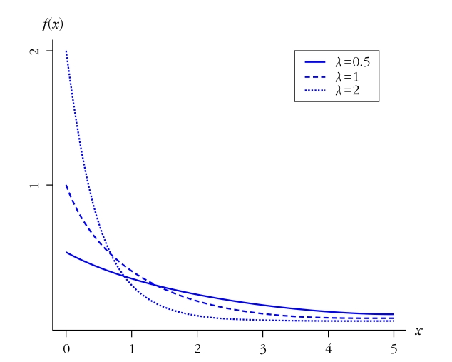
감마분포 감마분포를 따르는 확률변수 \(X\)의 확률밀도함수는 다음과 같다. \[f(x;r,\lambda)=\frac{\lambda}{\Gamma(r)}(\lambda x)^{r-1}e^{-\lambda x}\] \[f(x; r,1/\theta)=\frac{1}{\theta\Gamma(r)}\left( \frac{x}{\theta}\right) ^{r-1}e^{-x/\theta}, \hskip5pt x>0\] 여기서 \(r\)은 형태(shape) 모수로 사건 발생 횟수이고 \(\lambda\)는 척도(scale)모수로 단위 시간에 발생한 평균 사건 횟수이다.
감마분포를 따르는 확률변수는 \(r\)번째 사건이 발생할 때까지 기다리는 시간
확률변수가 모수 (\(r, \lambda\)) 또는 (\(r, 1/\theta\))를 가지는 감마분포를 따를 때 \(X\sim gam(r,\lambda)\) 또는 \(X\sim gam(r,1/\theta)\)로 표현
감마함수(gamma function)는 다음과 같고 특별한 성질을 갖는다. \[\Gamma(r)=\int_{0}^{\infty}x^{r-1}e^{-x}dx, \hskip5pt r>0\]
\(\Gamma(1)=1\)
\(\Gamma(1/2)=\sqrt{\pi}\)
\(\Gamma(r+1)=r\Gamma(r), \hskip5pt r>0\)
\(\Gamma(r+1)=r!\), \(r\)은 자연수
지수분포와 감마분포의 평균, 분산, 적률생성함수는 다음과 같다. \[\text{지수분포} : E(X)=\frac{1}{\lambda}=\theta, \hskip10pt Var(X)=\frac{1}{\lambda^2}=\theta^2, \hskip10pt m(t)=\frac{\lambda}{\lambda-t}, \hskip5pt (t<\lambda)\] \[\text{감마분포} : E(X)=\frac{r}{\lambda}=r\theta, \hskip10pt Var(X)=\frac{r}{\lambda^2}=r\theta^2, \hskip10pt m(t)=\left( \frac{\lambda}{\lambda-t}\right) ^r, \hskip5pt (t<\lambda)\]
(증명) \[\begin{aligned} m(t)&=E(e^{tX})=\int_0^{\infty}e^{tx}\frac{\lambda}{\Gamma(r)}(\lambda x)^{r-1}e^{-\lambda x}dx \\ &= \left(\frac{\lambda}{\lambda-t}\right)^r\int_0^{\infty}\frac{(\lambda-t)^r}{\Gamma(r)}(x)^{r-1}e^{-(\lambda-t) x}dx \\ &=\left(\frac{\lambda}{\lambda-t}\right)^r\end{aligned}\]
적률생성함수를 1, 2차 미분하면 다음과 같다. \[m'(t)=r\lambda^r(\lambda-t)^{-r-1}, \hskip10pt m''(t)=r(r+1)\lambda^r(\lambda-t)^{-r-2}\]
이를 이용하여 다음과 같이 평균과 분산을 구한다. \[E(X)=m'(0)=\frac{r}{\lambda},\hskip10pt E(X^2)=m''(0)=\frac{r(r+1)}{\lambda^2}\] \[Var(X)= \frac{r(r+1)}{\lambda^2}-(\frac{r}{\lambda})^2=\frac{r}{\lambda^2}\]
\(r=1, 2,3\)인 감마분포(\(\lambda=1\))
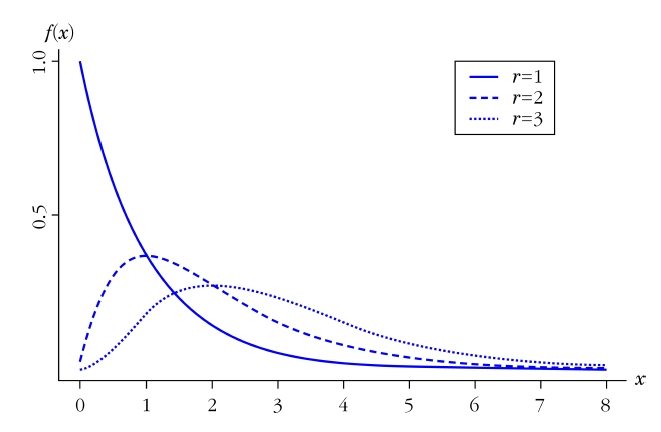
지수분포의 누적분포함수(cdf)는 다음과 같다. \[F(x)=1-e^{-\lambda x}\]
- (증명) \[F(x)=\int_{-\infty}^{\infty}f(t)dt=\int_{0}^x \lambda e^{-\lambda t}dt=[-e^{-\lambda t}]_0 ^x=1-e^{-\lambda t}\]
확률변수 \(X\)가 모수인 \(\lambda\)인 지수분포를 따른다면 다음이 성립한다. \[P(X>a+b|X>a)=P(X>b)\]
(풀이) \[P(X>a+b|X>a)=\frac{P(X>a+b)}{P(X>b)}=\frac{e^{-\lambda (a+b)}}{e^{-\lambda a}}=e^{-\lambda b}=P(X>b)\]
정리 5.18의 의미는 하나의 사건이 \(b\)시간 동안 일어나지 않을 확률은 \(a\)시간 동안 일어나지 않은 것을 전제로 추가적으로 \(b\)시간 동안 일어나지 않을 확률과 같다는 의미
다시 말해 앞으로 사건이 일어나지 않고 지속될 것은 지금까지 지속되어온 시간과는 무관하다는 의미
이러한 지수분포의 성질을 무기억성(memoryless property)이라 함
어떤 은행에서 한 행원이 일을 처리한 후 다음 손님의 일을 처리할 때까지 걸리는 평균시간이 3분인 지수분포를 따른다고 한다.
행원이 일을 처리하는데 3분 이상 걸릴 확률을 구하라.
일을 처리하는데 3분에서 6분 사이가 걸릴 확률을 구하라.
(풀이) 확률변수 \(X\)를 행원이 일을 처리하는데 걸리는 시간이라고 하면 평균시간이 3분이므로 1분에 평균적으로 1/3건을 처리한다. 따라서 \(\lambda=1/3\)인 지수분포를 이용한다.
a) \[P(X\ge 3)=1-P(X<3)=1-(1-e^{-\frac{1}{3}\dot 3})=e^{-1}\approx 0.368\]
b) \[P(3<X<6)=P(X<6)-P(X<3)=1-e^{-\frac{1}{3}\dot 6}-1+e^{-\frac{1}{3}\dot 3}=e^{-1}-e^{-2}\approx 0.233\]
한 자동차의 배터리 수명은 평균 \(10,000km\)인 지수분포를 따른다고 한다. 한 여행자가 이 자동차를 타고 \(5,000km\)를 여행하려고 한다. 여행출발 전에 이 자동차가 \(5,000km\)를 주행했다면 이 여행자가 여행중에 배터리를 교환하지 않을 확률을 구하라.
(풀이) 지수분포의 평균이 \(10,000km\)이므로 평균사건(배터리 교환) 수는 \(\lambda=0.0001\)이다. 확률변수 \(X\)를 배터리의 수명이라 하면 구하고자 하는 확률은 다음과 같다. \[\begin{aligned} P(X>5000+5000|X>5000)&=\frac{P[(X>10000)\cap (X>5000)])}{P(X>5000)}\\ &=\frac{P(X>10000)}{P(X>5000)}=\frac{e^{-1}}{e^{-1/2}}\approx 0.607\end{aligned}\]
카이제곱분포(chi-squared distribution; \(\chi^2\)분포):
- \(\nu\)가 양의 정수일 때 \(r=\nu/2\), \(\lambda=1/2\)인 감마분포를 자유도가 \(\nu\)인 카이제곱분포라고 함
카이제곱분포 자유도가 \(\nu\)인 카이제곱분포는 다음과 같다. \[f(x; \nu)=\frac{1}{2^{\nu/2}\Gamma(\nu/2)}x^{\nu/2-1}e^{-x/2}, \hskip5pt x>0\]
카이제곱분포는 원점인 \(0\)에서 시작하여 \(x\)축의 양의 방향으로 곡선을 가짐
자유도가 작으면 왼쪽으로 치우친 모양으로 비대칭이고 자유도가 커짐에 따라 분포가 좌우대칭에 가까워지며 자유도가 큰 경우 정규분포와 같은 모양을 가짐
자유도가 1, 2인 경우 분포의 최빈값은 0이고 자유도가 3이상인 경우의 최빈값은 \(\nu-2\)
자유도(\(\nu\)=1, 3, 8)에 따른 \(\chi^2\)분포
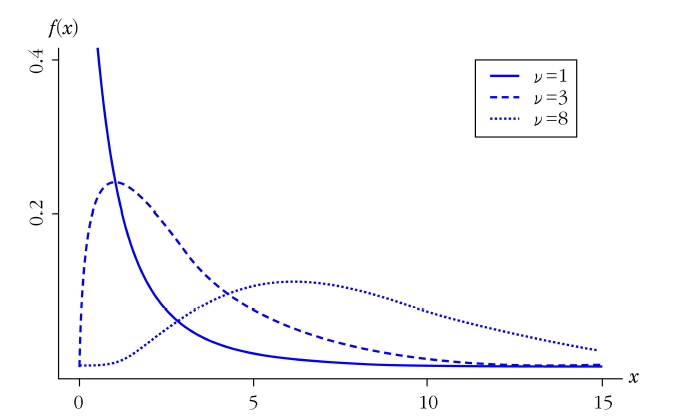
자유도가 \(\nu\)인 카이제곱분포를 따르는 확률변수 \(X\)의 평균, 분산 및 적률생성함수는 다음과 같다. \[E(x)=\nu, \hskip10pt Var(X)=2\nu, \hskip10pt m(t)=\left( \frac{1}{1-2t}\right)^{\nu/2}, \hskip5pt t<1/2\]
- (증명) \[E(X)=\frac{\nu/2}{1/2}=\nu\] \[Var(X)=\frac{\nu/2}{(1/2)^2}=2\nu\] \[m(t)=\left( \frac{1/2}{1/2-t}\right)^{\nu/2}=\left( \frac{1}{1-2t}\right)^{\nu/2}, \hskip5pt t<1/2\]